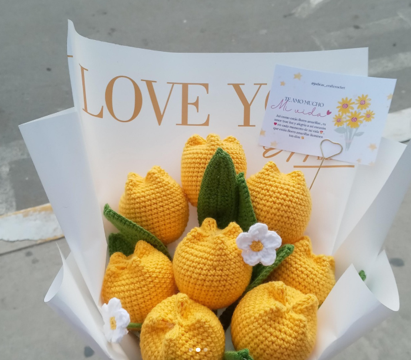
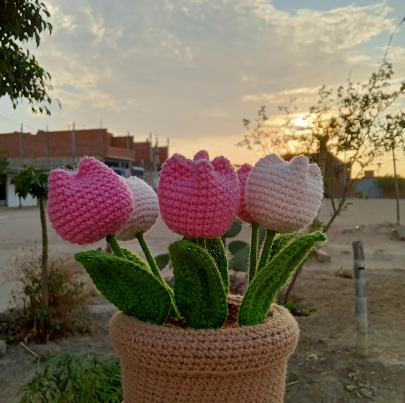
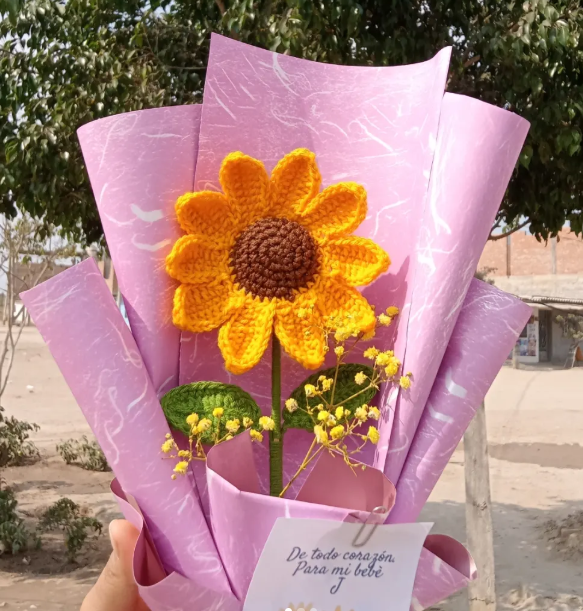

Ramos de gala
Combinaciones armoniosas de rosas y tulipanes, envueltas con elegancia. El regalo ideal para aniversarios y momentos que merecen ser eternos.

Macetas y Centros de Mesa
Un pequeño arreglo de flores en una base tejida o de madera.

Flores individuales
La sofisticación de lo simple. Una sola flor cargada de significado, perfecta como un detalle sutil o para añadir un toque artesanal a tu rincón favorito.